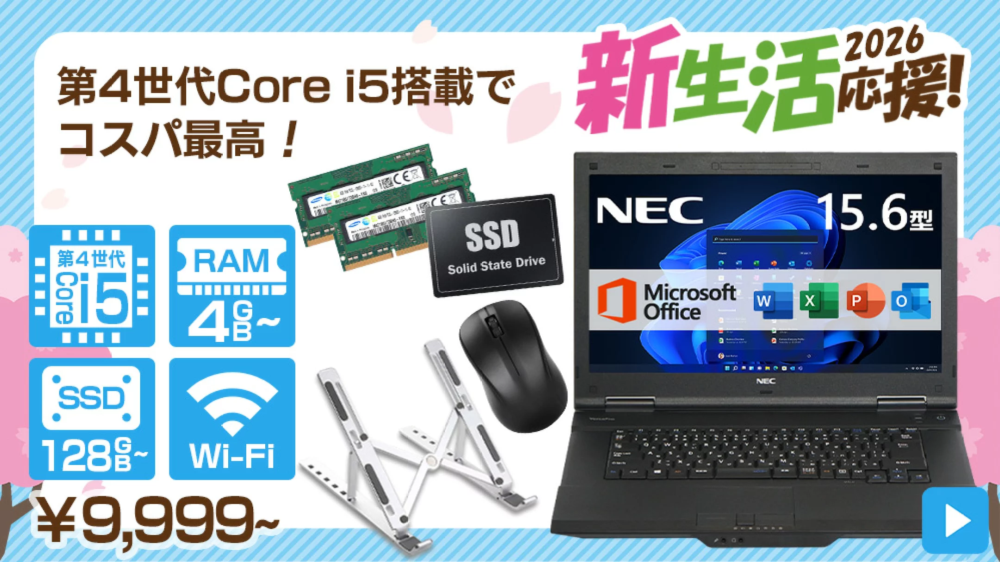

【レビュー】9,999円のMicrosoft Office付きNEC VersaPro。ゴミか、宝か。楽天市場Harukisuの闇を暴く
更新日: 2026.04.17

商品ページへ進む
今回レビューするのは、9,999円で買える
NEC VersaPro（Microsoft Office付き）。
正直に言うと、バッテリーは期待しない方がいい。新品みたいな快適さや綺麗さもない。
それでも、レポート作成・ネット・動画くらいなら問題なく使える。
「安く済ませたい」という目的なら、むしろ現実的な選択。
ただし――
何も知らずに“安さだけ”で選ぶと、ほぼ確実に失敗する。 動かない、遅い、結局使わない。よくある話。 でも逆に言えば、ポイントさえ知っていれば1万円でも普通に使えるPCは手に入る。
このページでは、
・このPCでできること / できないこと
・買って後悔する人の特徴
・失敗しない選び方
を、初心者でも分かるようにまとめている。
最後まで読めば、「これ買っていいのか」が自分で判断できるようになる。 ついでに家電ショップの店員のセールスを論破できるだけのパソコンの知識も身につけられるだろう。
ただし――
何も知らずに“安さだけ”で選ぶと、ほぼ確実に失敗する。 動かない、遅い、結局使わない。よくある話。 でも逆に言えば、ポイントさえ知っていれば1万円でも普通に使えるPCは手に入る。
このページでは、
・このPCでできること / できないこと
・買って後悔する人の特徴
・失敗しない選び方
を、初心者でも分かるようにまとめている。
最後まで読めば、「これ買っていいのか」が自分で判断できるようになる。 ついでに家電ショップの店員のセールスを論破できるだけのパソコンの知識も身につけられるだろう。
1.このPCでできること
まずは販売ページに書いてあるスペックを見てみよう。
| 機種名 | NEC VersaPro 2013年式 （古い） |
|---|---|
| 価格帯 | 9,999円〜 （安いほう） |
| CPU | Intel 第4世代 Core i5 （遅い） |
| メモリ / ストレージ | 4GB / 128GB SSD （※オプションで増設可能） |
| 重量 / インターフェース | 約2.4kg （重い） / USB3.0×5、VGA搭載 （良い） |
| バッテリー状態 | ほぼ死亡 （ACアダプタ必須） |
| 付属オフィス | Microsoft Office 2019 Home&Business （良い） |
CPUとメモリ：現代のOSを動かすギリギリのライン
搭載されているのは第4世代Core i5。今となっては歴史展示レベルだが、完全な骨董品というわけでもない。ただし、標準の「メモリ4GB」のままWindows 11を動かすのは狂気の沙汰だ。必ずオプションで8GB以上にしろ。
2. このポンコツを「1万円の宝」に変える条件
散々ボロクソに言ったが、用途を極限まで絞れば、これほどコスパの良いおもちゃは他にない。
- ChromeOS Flexをぶち込む：Windows 11の重さに耐えられないなら、軽量OSを入れろ。これで「1万円の爆速ブラウジング専用機」に化ける。
- 完全なる据え置き機：重量2.4kgでバッテリーが死んでいる [cite: 836, 868]。持ち運ぶという概念を捨て、机に固定して事務作業の奴隷として酷使するなら十分戦える。
- Office 2019永続版の錬金術：この価格でMicrosoft Office 2019 Home & Businessが付属する [cite: 878]。ソフトを買ったらPCがオマケで付いてきたと思えば計算が合う。
3. 最終決断：Harukisuは信用できるか？
中古PCで一番怖いのは「届いた瞬間に終わる個体」だ。しかし、このショップ（Harukisu）の評価は4.21（732件）と異様に高い [cite: 1379]。
その理由は「逃げないサポート体制」にある。通常30日の保証が、商品到着後にレビューを書くだけで「90日」に延長される [cite: 929, 935]。中古PCの不具合は3ヶ月以内に大体出尽くすため、この延長はデカい。
このPCは魔法の箱じゃない。ただの「少し古い、安い道具」だ。バッテリーが死んでいようが重かろうが、「1万円でネットとOfficeが動けば文句はない」と腹を括れる現実主義者だけ、下のリンクから在庫を漁ってこい。
腹を括って楽天市場で在庫を見る